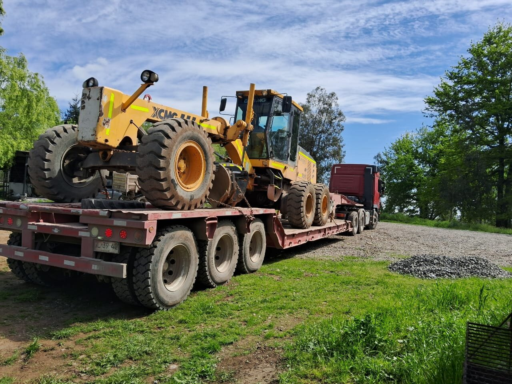
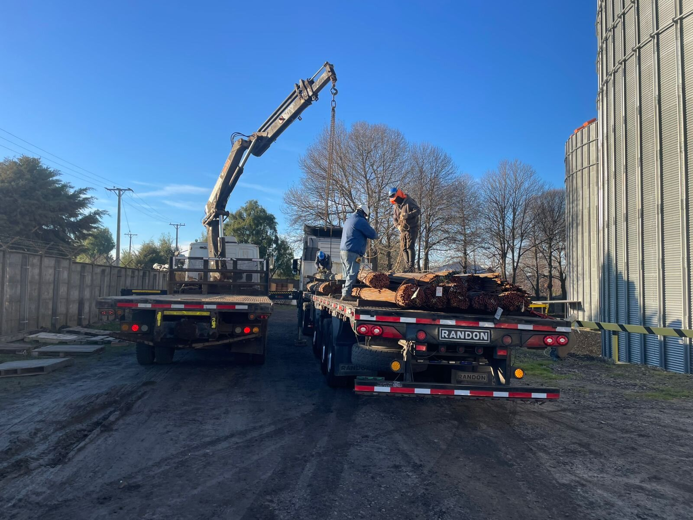
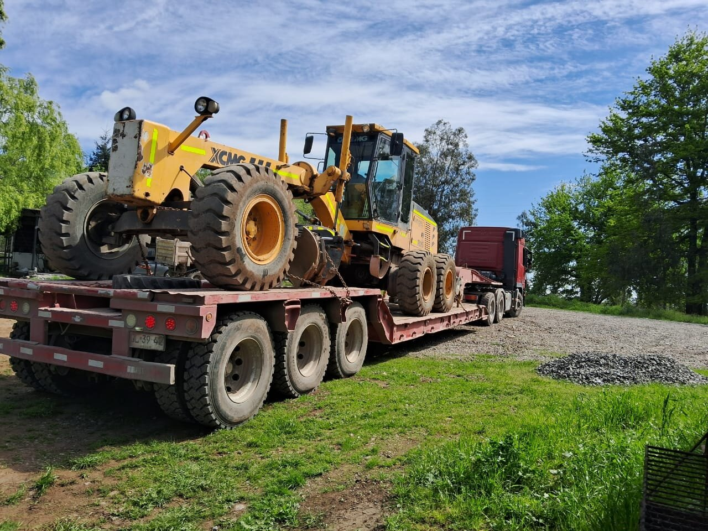
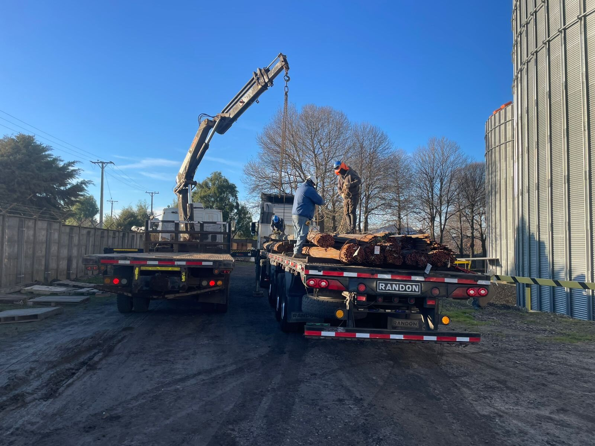
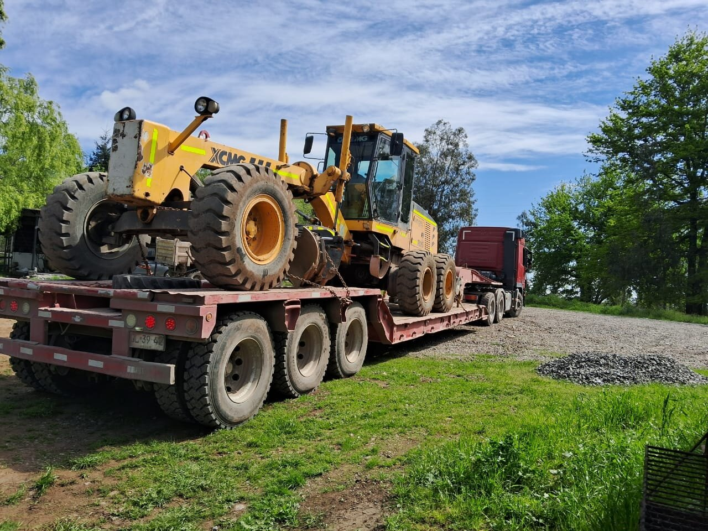
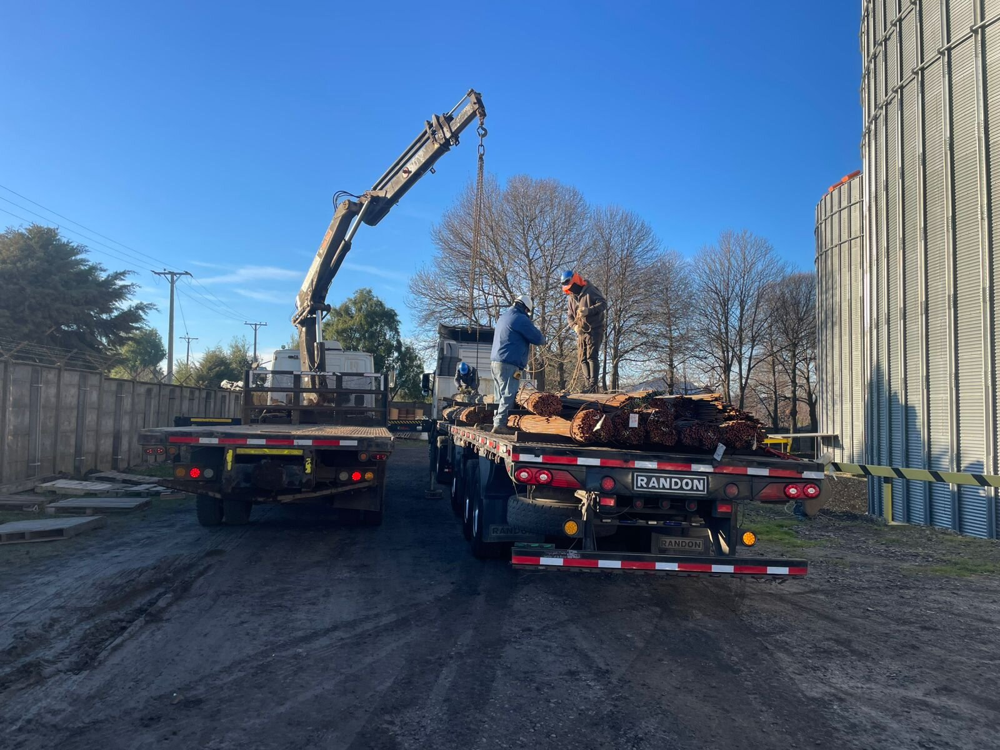

Galería
Fotos
 



Agrícolas y Transportes Perezoso SpA es una empresa dedicada a la venta de áridos, arriendo de maquinaria pesada y servicios de transporte y montaje, orientada a apoyar proyectos agrícolas, de construcción y obras especiales.
Contamos con retroexcavadora, excavadora de 14 y 21 toneladas, camión pluma, camiones tolva de 14 y 20 cubos, cama baja y transporte por carretera, permitiéndonos entregar soluciones integrales, eficientes y seguras, adaptadas a los requerimientos de cada cliente.
Nuestro trabajo se enfoca en brindar soluciones confiables, contribuyendo al desarrollo de proyectos agrícolas y de construcción mediante un trabajo eficiente, seguro y enfocado en la satisfacción de nuestros clientes y el respeto por el entorno.
Brindar soluciones integrales en venta de áridos, arriendo de maquinaria y servicios de transporte especializado, incluyendo retroexcavadora, excavadora de 14 y 21 toneladas, cama baja y transporte por carretera, contribuyendo al desarrollo de proyectos agrícolas y de construcción mediante un trabajo eficiente, seguro y confiable, enfocado en la satisfacción de nuestros clientes y el respeto por el entorno.


📞 Teléfono: +56 9 77524880
✉️ Email: manuel_monares@hotmail.com
📍 Dirección: Comuna de Cabrero sector Charrua norte calle Ohiggins S/N